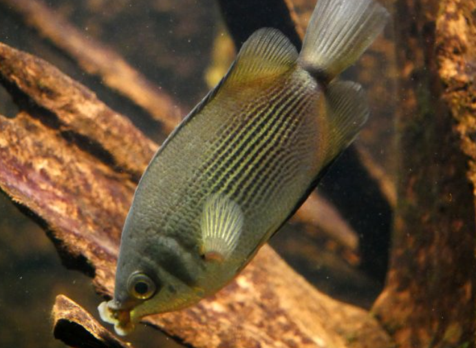
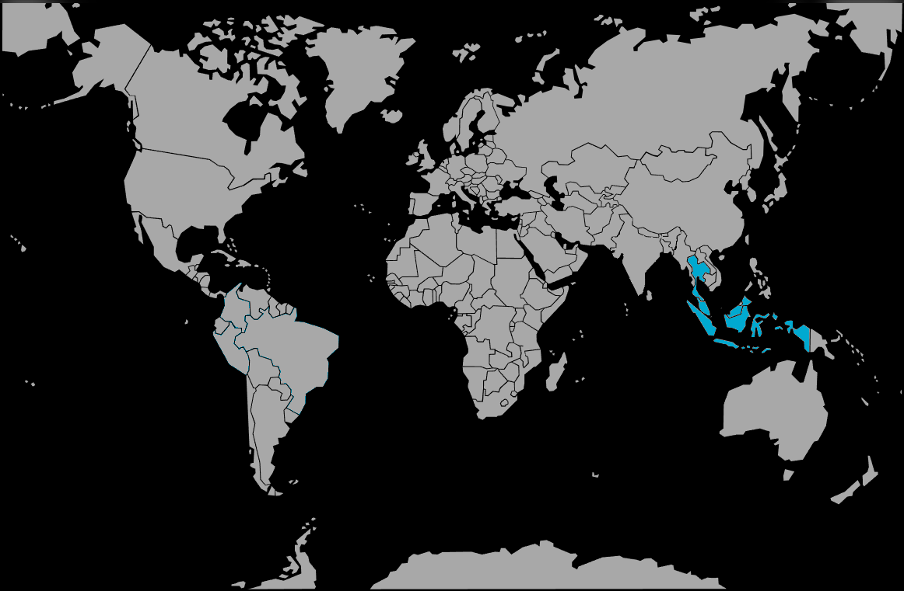

Systématique
- Ordre : Anabantiformes
- Famille : Helostomatidae
- Genre : Helostoma
- Espèce : H. temminckii
- Note : Seule espèce de sa famille.

Helostoma temminckii, universellement connu sous le nom de Gourami embrasseur, est un poisson emblématique d'Asie du Sud-Est. C'est l'unique représentant de la famille des Helostomatidae.
La forme sauvage est de couleur vert-argenté, mais la variété la plus courante en aquarium est la forme "rose" ou dorée (leucistique), qui est blanc-rosé. Il atteint une taille imposante, souvent 15 à 20 cm en captivité, et jusqu'à 30 cm dans la nature, où il est aussi un poisson de consommation courant.
Sa caractéristique la plus frappante est sa bouche aux lèvres épaisses et charnues, garnies de centaines de dents minuscules, qu'il utilise comme une râpe pour détacher les algues des surfaces.
Le fameux "baiser" entre deux individus n'est pas un rituel amoureux, mais une lutte territoriale entre mâles (parfois entre femelles) pour tester leur force. Ils se saisissent par la bouche et se poussent mutuellement.
Bien que paisible avec les autres espèces de grande taille, il peut devenir territorial envers ses congénères. Il passe une grande partie de son temps à racler les vitres, les plantes et le décor pour se nourrir d'algues et de micro-organismes. Il nécessite un grand espace de nage.
Mode : ovipare (œufs flottants).
Contrairement aux Gouramis de la famille des Osphronemidae (comme le Gourami bleu ou nain), le Gourami embrasseur ne construit pas de nid de bulles.
Lors de la ponte, le couple relâche des milliers d'œufs (jusqu'à 5000) qui contiennent une gouttelette d'huile leur permettant de flotter librement à la surface. Il n'y a aucun soin parental : les parents ignorent les œufs et peuvent même les manger.
Dimorphisme sexuel : Quasiment impossible à déterminer visuellement hors période de reproduction. Les femelles gravides sont simplement plus rondes.
Espérance de vie : Très robuste, il peut vivre plus de 15 à 20 ans en aquarium.
Originaire d'Asie du Sud-Est, on le trouve principalement en Thaïlande et dans les grandes îles d'Indonésie (Java, Sumatra, Bornéo, Sulawesi). Il habite les eaux calmes, les marais, les canaux et les plaines inondables à courant lent, souvent riches en végétation.
Répartition

Origine naturelle :
- Asie du Sud-Est.
- Indonésie (Java, Sumatra, Bornéo).
- Thaïlande.
- Malaisie.
Paramètres de maintenance
Température : 24 à 30 °C (tolère bien la chaleur).
pH : 6,0 à 8,0.
GH : 5 à 20 °dGH.
Volume conseillé : Minimum 300 à 400 L pour un couple ou un petit groupe. En raison de sa taille adulte (20 cm) et de sa longévité, il ne convient pas aux petits aquariums.
Régime alimentaire
Régime : omnivore / algivore (filtreur).
C'est un racleur d'algues efficace. Il se nourrit de phytoplancton, de zooplancton et d'algues vertes.
En aquarium, il accepte tout (paillettes, granulés), mais une part végétale importante (épinards, courgettes, pois, spiruline) est indispensable pour sa santé, en complément de nourriture vivante ou congelée.